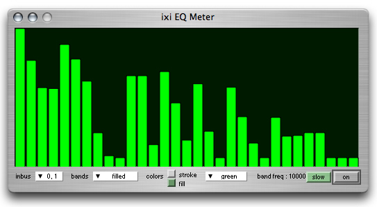

ixiQuarks : EQMeter

| EQMeter |
| The EQ meter is a typical 31 band frequency meter typical in home stereos and studio equipment. The band color and appearance can be controlled. By clicking on the band, the band frequency is showed. The slow/fast button makes the meter function on respective speeds, in order to save CPU. |